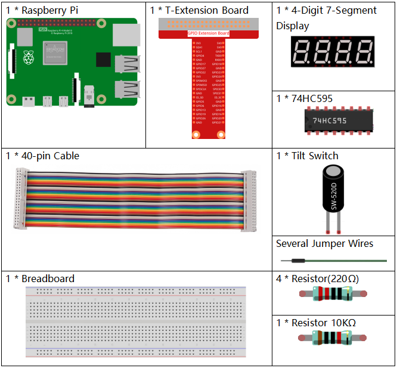
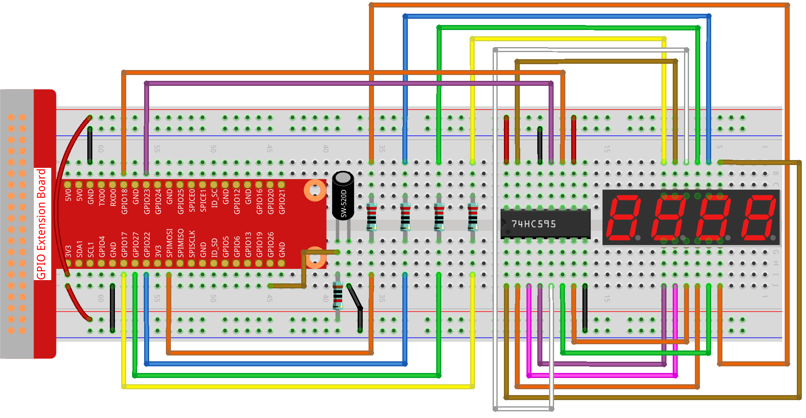

Nota
Ciao, benvenuto nella Community SunFounder per gli appassionati di Raspberry Pi, Arduino & ESP32 su Facebook! Approfondisci l’utilizzo di Raspberry Pi, Arduino ed ESP32 insieme ad altri appassionati.
Perché Unirti?
Supporto Esperto: Risolvi problemi post-vendita e sfide tecniche con l’aiuto della nostra community e del nostro team.
Impara & Condividi: Scambia suggerimenti e tutorial per migliorare le tue abilità.
Anteprime Esclusive: Accedi in anticipo a nuovi annunci di prodotti e anteprime.
Sconti Speciali: Approfitta di sconti esclusivi sui nostri ultimi prodotti.
Promozioni Festive e Giveaway: Partecipa a omaggi e promozioni durante le festività.
👉 Pronto a esplorare e creare con noi? Clicca su [Qui] e unisciti oggi stesso!
3.1.13 GIOCO - 10 Secondi
Introduzione
Prosegui con me per costruire un dispositivo di gioco che metta alla prova la tua concentrazione. Lega un interruttore a inclinazione a un bastoncino per creare una bacchetta magica. Agita la bacchetta per avviare il conteggio sul display a 4 cifre e agitala di nuovo per fermarlo. Se riesci a mantenere il conteggio visualizzato su 10,00, hai vinto! Puoi giocare con i tuoi amici per vedere chi è il mago del tempo.
Componenti Necessari
Per questo progetto, abbiamo bisogno dei seguenti componenti.
{kind=link}
Schema Elettrico
T-Board Name |
physical |
wiringPi |
BCM |
GPIO17 |
Pin 11 |
0 |
17 |
GPIO27 |
Pin 13 |
2 |
27 |
GPIO22 |
Pin 15 |
3 |
22 |
SPIMOSI |
Pin 19 |
12 |
10 |
GPIO18 |
Pin 12 |
1 |
18 |
GPIO23 |
Pin 16 |
4 |
23 |
GPIO24 |
Pin 18 |
5 |
24 |
GPIO26 |
Pin 37 |
25 |
26 |

Procedura Sperimentale
Step 1: Assembla il circuito.
Step 2: Vai nella cartella del codice.
cd ~/davinci-kit-for-raspberry-pi/python-pi5
Step 3: Esegui il file eseguibile.
sudo python3 3.1.13_GAME_10Second.py
Agita la bacchetta, il display a 4 cifre inizierà a contare; agitala di nuovo per fermare il conteggio. Se riesci a mantenere il conteggio visualizzato su 10.00, hai vinto. Agitala un’altra volta per avviare un nuovo round di gioco.
Avvertimento
Se viene visualizzato un errore con il messaggio RuntimeError: Cannot determine SOC peripheral base address, fai riferimento a Se gpiozero non funziona.
Codice
Nota
Puoi Modificare/Reimpostare/Copiare/Eseguire/Fermare il codice qui sotto. Tuttavia, prima di procedere, devi navigare al percorso del codice sorgente come davinci-kit-for-raspberry-pi/python-pi5. Dopo aver modificato il codice, puoi eseguirlo direttamente per vedere l’effetto.
#!/usr/bin/env python3
from gpiozero import OutputDevice, Button
import time
import threading
# Inizializza il pulsante connesso al GPIO 26
sensorPin = Button(26)
# Definisci i pin GPIO collegati al registro di scorrimento 74HC595
SDI = OutputDevice(24) # Ingresso dati seriale
RCLK = OutputDevice(23) # Orologio del registro
SRCLK = OutputDevice(18) # Orologio del registro a scorrimento
# Definisci i pin GPIO per la selezione delle cifre sul display a 7 segmenti
placePin = [OutputDevice(pin) for pin in (10, 22, 27, 17)]
# Codici dei segmenti per i numeri da 0 a 9 sul display a 7 segmenti
number = (0xc0, 0xf9, 0xa4, 0xb0, 0x99, 0x92, 0x82, 0xf8, 0x80, 0x90)
# Variabili del contatore e del timer
counter = 0
timer1 = None
gameState = 0
def clearDisplay():
""" Clear all segments on the 7-segment display. """
for _ in range(8):
SDI.on()
SRCLK.on()
SRCLK.off()
RCLK.on()
RCLK.off()
def hc595_shift(data):
""" Shift data to the 74HC595 shift register to display a digit. """
for i in range(8):
SDI.value = 0x80 & (data << i)
SRCLK.on()
SRCLK.off()
RCLK.on()
RCLK.off()
def pickDigit(digit):
""" Select which digit to display on the 7-segment display. """
for pin in placePin:
pin.off()
placePin[digit].on()
def display():
""" Display the current counter value on the 7-segment display. """
global counter
clearDisplay()
pickDigit(0)
hc595_shift(number[counter % 10])
clearDisplay()
pickDigit(1)
hc595_shift(number[counter % 100 // 10])
clearDisplay()
pickDigit(2)
hc595_shift(number[counter % 1000 // 100] - 0x80)
clearDisplay()
pickDigit(3)
hc595_shift(number[counter % 10000 // 1000])
def stateChange():
""" Handle state changes for the counter based on button presses. """
global gameState, counter, timer1
if gameState == 0:
counter = 0
time.sleep(1)
timer()
elif gameState == 1 and timer1 is not None:
timer1.cancel()
time.sleep(1)
gameState = (gameState + 1) % 2
def loop():
""" Main loop to check for button presses and update the display. """
global counter
currentState = 0
lastState = 0
while True:
display()
currentState = sensorPin.value
if (currentState == 0) and (lastState == 1):
stateChange()
lastState = currentState
def timer():
""" Timer function that increments the counter every 0.01 second. """
global counter, timer1
timer1 = threading.Timer(0.01, timer)
timer1.start()
counter += 1
try:
loop()
except KeyboardInterrupt:
if timer1:
timer1.cancel()
Spiegazione del Codice
Lo script inizia importando i moduli necessari. La libreria
gpiozeroviene utilizzata per interfacciarsi con dispositivi GPIO come pulsanti, mentre i modulitimeethreadingsono utili per gestire le operazioni temporali o le attività concorrenti.#!/usr/bin/env python3 from gpiozero import OutputDevice, Button import time import threading
Inizializza un oggetto
Buttondalla libreria GPIO Zero, collegandolo al pin GPIO 26. Questa configurazione consente di rilevare le pressioni del pulsante.# Inizializza il pulsante collegato al GPIO 26 sensorPin = Button(26)
Inizializza i pin GPIO collegati agli ingressi del registro a scorrimento: ingresso seriale (SDI), ingresso di clock del registro (RCLK) e ingresso di clock del registro a scorrimento (SRCLK).
# Definisce i pin GPIO collegati al registro di scorrimento 74HC595 SDI = OutputDevice(24) # Ingresso Dati Seriale RCLK = OutputDevice(23) # Clock del Registro SRCLK = OutputDevice(18) # Clock del Registro a Scorrimento
Inizializza i pin per ciascuna cifra del display a 7 segmenti e definisce i codici binari per visualizzare i numeri da 0 a 9.
# Definisce i pin GPIO per la selezione delle cifre sul display a 7 segmenti placePin = [OutputDevice(pin) for pin in (10, 22, 27, 17)] # Definisce i codici dei segmenti per i numeri da 0 a 9 sul display a 7 segmenti number = (0xc0, 0xf9, 0xa4, 0xb0, 0x99, 0x92, 0x82, 0xf8, 0x80, 0x90)
Funzioni per il controllo del display a 7 segmenti.
clearDisplayspegne tutti i segmenti,hc595_shiftinvia i dati al registro a scorrimento, epickDigitattiva una cifra specifica sul display.def clearDisplay(): """ Clear all segments on the 7-segment display. """ for _ in range(8): SDI.on() SRCLK.on() SRCLK.off() RCLK.on() RCLK.off() def hc595_shift(data): """ Shift data to the 74HC595 shift register to display a digit. """ for i in range(8): SDI.value = 0x80 & (data << i) SRCLK.on() SRCLK.off() RCLK.on() RCLK.off() def pickDigit(digit): """ Select which digit to display on the 7-segment display. """ for pin in placePin: pin.off() placePin[digit].on()
Funzione per visualizzare il valore corrente del contatore sul display a 7 segmenti.
def display(): """ Display the current counter value on the 7-segment display. """ global counter clearDisplay() pickDigit(0) hc595_shift(number[counter % 10]) clearDisplay() pickDigit(1) hc595_shift(number[counter % 100 // 10]) clearDisplay() pickDigit(2) hc595_shift(number[counter % 1000 // 100] - 0x80) clearDisplay() pickDigit(3) hc595_shift(number[counter % 10000 // 1000])
Funzione per gestire i cambiamenti di stato (avvio/stop) del contatore in base alle pressioni del pulsante.
def stateChange(): """ Handle state changes for the counter based on button presses. """ global gameState, counter, timer1 if gameState == 0: counter = 0 time.sleep(1) timer() elif gameState == 1 and timer1 is not None: timer1.cancel() time.sleep(1) gameState = (gameState + 1) % 2
Ciclo principale che controlla continuamente lo stato del pulsante e aggiorna il display. Chiama
stateChangequando cambia lo stato del pulsante.def loop(): """ Main loop to check for button presses and update the display. """ global counter currentState = 0 lastState = 0 while True: display() currentState = sensorPin.value if (currentState == 0) and (lastState == 1): stateChange() lastState = currentState
Funzione del timer che incrementa il contatore a intervalli regolari (ogni 0,01 secondi).
def timer(): """ Timer function that increments the counter every 0.01 second. """ global counter, timer1 timer1 = threading.Timer(0.01, timer) timer1.start() counter += 1
Esegue il ciclo principale e consente una chiusura pulita del programma utilizzando un’interruzione da tastiera (Ctrl+C).
try: loop() except KeyboardInterrupt: if timer1: timer1.cancel()